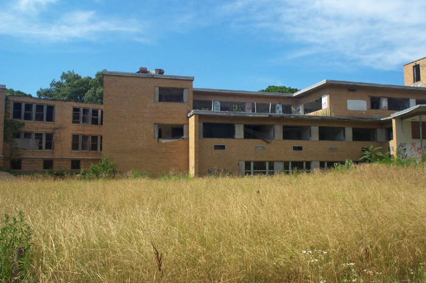

Patients who died at the old tuberculosis hospital in Lima are said to wander the halls of the now-abandoned complex. I visited the Lima TB Hospital in August 2002; look for a complete section on it soon.
Back